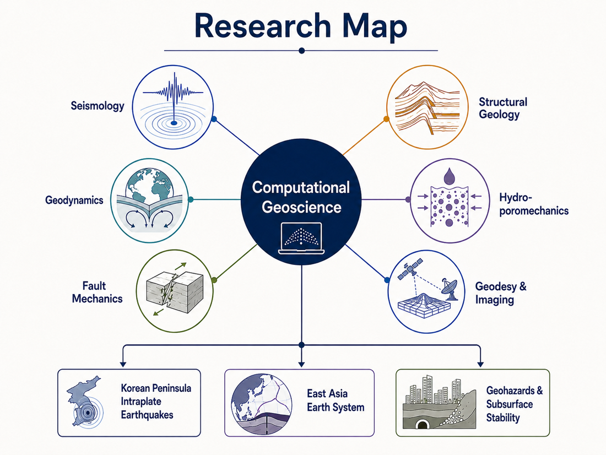

Research
I study intraplate seismicity in Korea and East Asia as a physical process — how regional stress is set and transferred, and where and why seismic deformation begins — by combining observational analysis with physics-based numerical modeling. My work develops along three connected directions:

Fault-zone deformation & friction
Treating faults as finite-thickness damage and shear zones rather than thin planes, and using rate-and-state friction to unify stable creep, aseismic slip, earthquake nucleation, rupture, and long-term fault evolution within one continuum framework.
Regional stress & lithospheric structure
How subduction, mantle and transition-zone heterogeneity, lithospheric-thickness variations, and plate-boundary conditions set and transfer the crustal stress field — integrating seismicity, stress data, GNSS deformation, and seismic structure.
Fluids & fault stability
How pore pressure, permeability structure, and poroelastic effects shift the balance between aseismic and seismic slip — placing natural and induced seismicity within a single physical framework.
These directions bridge the short timescale of earthquakes and the long timescale of tectonic evolution, and connect naturally to geohazards and subsurface-stability problems — induced seismicity, CO2 storage, and radioactive-waste disposal.
Methods: finite-element & continuum-mechanics modeling; hydro-mechanical & poroelastic modeling; rate-and-state friction & earthquake-cycle modeling; seismic-wave propagation & random-media simulation; and seismological/geodetic analysis (teleseismic tomography, GNSS, postseismic deformation).